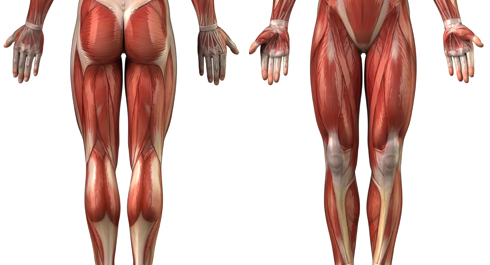
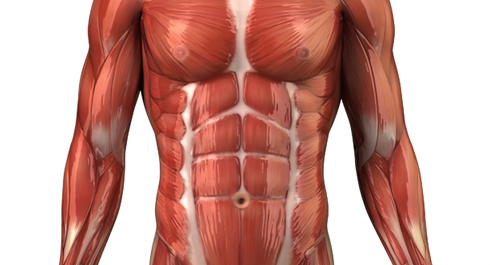
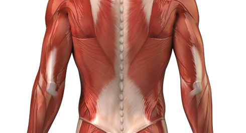

Что такое бег? Бег — это одно из самых доступных упражнений на развитие выносливости. Так или иначе бегать может и умеет практически каждый, бег требует минимальной экипировки, и им можно заниматься практически везде. Бег может стать прекрасным дополнением к упражнениям на турниках и брусьях, нисколько им не мешая, а только дополняя.
ВАЖНО!!!
Информация, представленная в инфопостах на этой неделе дается исключительно в ознакомительных целях и для расширения вашего кругозора. Использовать её мы рекомендуем ПОСЛЕ прохождения программы.
О пользе бега
1. Пробежки укрепляют не только задействованные в беге мышцы, но и сердечную мышцу, нашу самую главную мышцу. Сердце становится сильнее, а значит, улучшается кровообращение и транспортировка кислорода ко всем жизненным системам организма.
2. Помимо сердца умеренные занятия бегом благотворно влияют на иммунную систему и работу центральной нервной системы.
3. Так как во время бега активно работают почти все мышцы нашего тела, укрепляется и здоровье суставов – ведь они неразрывно взаимосвязаны.
4. Бег держит весь организм в тонусе, помогает бороться с одышкой, насморком и гипертонией.
5. Регулярные пробежки на свежем воздухе способствуют закаливанию организма.
6. Занятия бегом эффективны для людей, решивших похудеть, так как бег является одним из самых энергозатратных видов деятельности.
7. Бег способен легко победить депрессию, так как способствует выработке гормона счастья (эндорфина) и снимает стресс.
Бег и мышцы
Во время бега тренируется огромное количество мышц, основные из которых приходятся на ноги и ягодицы:

1. Ягодичные мышцы – помогают держать корпус в вертикальном положении правильно, от них зависит форма наших ягодиц, а также их ширина.
2. Мышцы бедра – это три группы мышц (передняя, задняя и медиальная), они же разгибатели, сгибатели и приводящие соответственно.
3. Квадрицепсы – в отличие от предыдущих, расположены по передней части бедер и отвечают за разгибание ноги. Они играют важную роль в перемещении коленного и тазобедренного суставов при беге.
4. Подвздошные мышцы – также выполняют сгибательную функцию бедра. Иногда при интенсивной тренировке могут стать причиной боли, сигнализируя о том, что пробежку лучше прервать.
5. Икры – мышцы, расположенные в голени. Помогают приподнимать ноги во время бега и стабилизировать тело.
В то же время, хотя и в меньшей степени, бег нагружает и другие мышцы тела, расположенные выше:
1. Ягодичные мышцы – помогают держать корпус в вертикальном положении правильно, от них зависит форма наших ягодиц, а также их ширина.
2. Мышцы бедра – это три группы мышц (передняя, задняя и медиальная), они же разгибатели, сгибатели и приводящие соответственно.
3. Квадрицепсы – в отличие от предыдущих, расположены по передней части бедер и отвечают за разгибание ноги. Они играют важную роль в перемещении коленного и тазобедренного суставов при беге.
4. Подвздошные мышцы – также выполняют сгибательную функцию бедра. Иногда при интенсивной тренировке могут стать причиной боли, сигнализируя о том, что пробежку лучше прервать.
5. Икры – мышцы, расположенные в голени. Помогают приподнимать ноги во время бега и стабилизировать тело.
В то же время, хотя и в меньшей степени, бег нагружает и другие мышцы тела, расположенные выше:

1. Грудинно-ключично-сосцевидная мышца.
2. Лестничные мышцы.
3. Дельтовидная мышца (передний и средний пучок).
4. Двуглавая мышца плеча.
6. Мышцы предплечья (разгибатели кисти и пальцев).
7. Плечевая мышца.
8. Большая грудная мышца.
9. Передняя зубчатая мышца.
10. Межреберные мышцы.
11. Прямая мышца живота.
12. Наружная косая мышца живота.
1. Грудинно-ключично-сосцевидная мышца.
2. Лестничные мышцы.
3. Дельтовидная мышца (передний и средний пучок).
4. Двуглавая мышца плеча.
6. Мышцы предплечья (разгибатели кисти и пальцев).
7. Плечевая мышца.
8. Большая грудная мышца.
9. Передняя зубчатая мышца.
10. Межреберные мышцы.
11. Прямая мышца живота.
12. Наружная косая мышца живота.

1. Дельтовидная мышца (задний пучок).
2. Трехглавая мышца плеча.
3. Мышцы предплечья (сгибатели кисти и пальцев).
4. Трапециевидная мышца.
5. Широчайшая мышца спины.
6. Длинные мышцы спины.
Бег разделяется на несколько типов, в зависимости от длины пробегаемой дистанции:
1. Длинные дистанции. Забеги имеют расстояние от 5 километров до марафона (42 км 195 м) и даже больше. Здесь важно рассчитать собственные силы, чтобы вообще добраться до финиша. Именно длинные дистанции являются наиболее популярными среди бегунов-любителей. Если вы никогда не занимались регулярно бегом, то начинать необходимо с бега на длинные дистанции. Техника длительного бега отличается максимальной экономичностью.
2. Средние дистанции. Расстояние от 800 до 3000 метров. Здесь необходимо не только развить скорость, но и проявить выносливость. Являются более требовательными к технике бега и подготовке ОДА (опорно-двигательного аппарата). Техника бега на средние дистанции требует специальной подготовки и упражнений.
3. Короткие дистанции. Максимально быстрая скорость. Расстояние от шестидесяти до четырехсот метров. Предъявляют самые высокие требования к технике бега и физической подготовке спортсмена.
Освоение техники беговых видов лучше всего начинать с техники бега на длинные дистанции, независимо от того, какую дистанцию вы собрались пробежать. Скорость в этих видах относительно невысокая, но в то же время здесь сохраняется общая визуальная техника бега, присущая всем его разновидностям.
Перед тем как выйти на первую пробежку необходимо убедиться, что у вас подходящая для бега обувь. В настоящее время на рынке присутствует огромное количество брендов, которые выпускают кроссовки, но не всякие кроссовки подходят для бега. Беговые кроссовки в первую очередь отличаются тем, что имеют подошву с заметными амортизационными свойствами. Кроссовки для тренажерного зала обычно таких свойств лишены, линейки кроссовок для игровых и зальных видов спорта имеют подошву, изготовленную специально для залов и непригодную для улицы, обувь для повседневной носки, выглядящая как кроссовки, вообще лишена каких-то качеств, делающих их подходящими для бега.
Но и специализированные кроссовки для бега будут сильно отличаться друг от друга. Кроссовки изготавливаются под разный вес бегуна (для тех, кто потяжелее требуется больше амортизирующего материала, а легкому бегуну его надо меньше), под разные дистанции (чем короче дистанция тем проще и легче подошва и тем меньше амортизации), под разные поверхности (шиповки — для дорожки стадиона, под жесткие ровные покрытия, такие как асфальт, бетон, плитка или под грунт с его неровностями, есть даже специальные кроссовки со встроенными шипами для бега по гололеду). На сайте каждого крупного производителя обычно имеется инструмент для подбора кроссовок, и им стоит воспользоваться, но окончательный выбор сделать лучше уже после примерки в магазине.
Дальше осталось только одно: выйти на пробежку.
Если у вас имеется пульсометр, то он будет не лишним, поскольку позволит контролировать уровень нагрузки во время тренировки. В первое время точно не стоит бегать на пульсе выше 80% от вашего максимального пульса. Если вы не знаете свой максимальный пульс, ориентируйтесь на цифру 150 и ниже. Это не значит, что надо бежать на 150 ударах в минуту, это должно быть вашим максимальным значением, даже если бег получается очень медленный!
Старайтесь бежать в расслабленном спокойном темпе, избегая лишних вертикальных колебаний, отталкиваясь от земли вперед, а не вверх. Не выносите стопу слишком сильно вперед и не втыкайтесь пяткой в землю. Это тормозит вас и создает излишнюю нагрузку на коленный сустав. Простое правило правильной техники: нога должна касаться поверхности прямо под вашим центром тяжести.
Взгляд должен быть направлен вперёд и нужно смотреть в землю впереди на 10-20 метров. Не надо напрягать плечи, плечи и руки должны быть максимально расслаблены. Руки должны двигаться вперёд-назад с хорошей амплитудой, поэтому не нужно прижимать их к телу локтями или раскачивать ими из стороны в сторону. Локти должны образовывать угол в 90 градусов, кисти слегка сжаты в кулаки. Корпус надо держать прямо, с очень небольшим наклоном вперед.
Частота шагов при беге называется каденсом. Если при обычной ходьбе каденс 100-120 шагов в минуту, то при беге стоит ориентироваться на 180 шагов в минуту, плюс-минус 10 шагов. Если у вас вдруг частота шагов отличается в большую или меньшую сторону, то это повод задуматься и спросить совета более опытных бегунов.
Далее, стоит трезво оценить свои силы, но при этом не ставить себе каких-то больших целей. Для начала надо попробовать пробежать всего пару километров или 10-15 минут. Если сразу после пробежки и на следующий день у вас нет никаких негативных ощущений, то можно постепенно увеличивать дистанцию. Если такая дистанция показалась чрезмерной, вы задыхаетесь, бежать очень тяжело, появляются боли в ногах или где-то еще, кружится голова, пульс превышает 150 ударов (или 80% от максимального пульса), если после бега или на следующий день болят мышцы, тогда стоит разбить дистанцию на отрезки бега и ходьбы и перемежать их: 1-2 минуты бега, 1-2 минуты ходьбы и так далее, постепенно увеличивая интервал бега по самочувствию.
Бегайте первое время через день, то есть не более трех раз в неделю. Как минимум до тех пор пока не выйдете на стабильные 30 минут бега три раза в неделю.
Простое, но очень важное правило: не прибавляйте километраж больше чем 10% за одну неделю!
Пробежки на 2-4 километра можно успешно сочетать с программой SOTKA. Дистанции от 5 км и больше могут уже слишком утомлять. Бегать можно как перед прохождением кругов программы, так и после, кому как нравится. Учеными до сих пор не установлено точно, когда лучше бегать, до силовой тренировки или после, поэтому делайте так, как вам удобно. Бег до силовой тренировки можно даже считать за неплохую разминку.
После пробежки старайтесь делать растяжку на все основные группы мышц ног: квадрицепсы, заднюю поверхность бедра и на икроножные. Если вы сочетаете бег с силовой тренировкой, то растяжку надо делать в самом конце, после выполнения всех упражнений.
Помимо обычных часов или пульсометров, сейчас существует огромный выбор приложений для смартфонов, позволяющих записывать трек с вашей пробежкой с фиксацией времени, скорости, а при наличии дополнительного датчика, ещё и пульса, что сильно упрощает ведение бегового дневника. Во многих из них также есть готовые бесплатные тренировочные программы для начинающих.
Не бойтесь бегать, не верьте в стереотипы о том, что занятия бегом – это непосильно тяжкий труд, отнимающий время и силы. Какому виду бега отдать предпочтение - дело каждого. Помните, что при любых тренировках на определенном этапе вашего физического развития важно правильно рассчитывать силы, добиваясь результата не высокими нагрузками, а регулярными занятиями. К успеху вас приведет в этом деле простое правило "ППП" - посильность, постепенность, постоянство.
1. Дельтовидная мышца (задний пучок).
2. Трехглавая мышца плеча.
3. Мышцы предплечья (сгибатели кисти и пальцев).
4. Трапециевидная мышца.
5. Широчайшая мышца спины.
6. Длинные мышцы спины.
Бег на различные дистанции
Бег разделяется на несколько типов, в зависимости от длины пробегаемой дистанции:
1. Длинные дистанции. Забеги имеют расстояние от 5 километров до марафона (42 км 195 м) и даже больше. Здесь важно рассчитать собственные силы, чтобы вообще добраться до финиша. Именно длинные дистанции являются наиболее популярными среди бегунов-любителей. Если вы никогда не занимались регулярно бегом, то начинать необходимо с бега на длинные дистанции. Техника длительного бега отличается максимальной экономичностью.
2. Средние дистанции. Расстояние от 800 до 3000 метров. Здесь необходимо не только развить скорость, но и проявить выносливость. Являются более требовательными к технике бега и подготовке ОДА (опорно-двигательного аппарата). Техника бега на средние дистанции требует специальной подготовки и упражнений.
3. Короткие дистанции. Максимально быстрая скорость. Расстояние от шестидесяти до четырехсот метров. Предъявляют самые высокие требования к технике бега и физической подготовке спортсмена.
Освоение техники беговых видов лучше всего начинать с техники бега на длинные дистанции, независимо от того, какую дистанцию вы собрались пробежать. Скорость в этих видах относительно невысокая, но в то же время здесь сохраняется общая визуальная техника бега, присущая всем его разновидностям.
Как начать бегать
Перед тем как выйти на первую пробежку необходимо убедиться, что у вас подходящая для бега обувь. В настоящее время на рынке присутствует огромное количество брендов, которые выпускают кроссовки, но не всякие кроссовки подходят для бега. Беговые кроссовки в первую очередь отличаются тем, что имеют подошву с заметными амортизационными свойствами. Кроссовки для тренажерного зала обычно таких свойств лишены, линейки кроссовок для игровых и зальных видов спорта имеют подошву, изготовленную специально для залов и непригодную для улицы, обувь для повседневной носки, выглядящая как кроссовки, вообще лишена каких-то качеств, делающих их подходящими для бега.
Но и специализированные кроссовки для бега будут сильно отличаться друг от друга. Кроссовки изготавливаются под разный вес бегуна (для тех, кто потяжелее требуется больше амортизирующего материала, а легкому бегуну его надо меньше), под разные дистанции (чем короче дистанция тем проще и легче подошва и тем меньше амортизации), под разные поверхности (шиповки — для дорожки стадиона, под жесткие ровные покрытия, такие как асфальт, бетон, плитка или под грунт с его неровностями, есть даже специальные кроссовки со встроенными шипами для бега по гололеду). На сайте каждого крупного производителя обычно имеется инструмент для подбора кроссовок, и им стоит воспользоваться, но окончательный выбор сделать лучше уже после примерки в магазине.
Небольшая ремарка
При наличии лишнего веса от 10 и более килограммов прежде чем заняться бегом, было бы хорошо сократить излишек веса хотя бы до 10 килограммов. Каждый лишний килограмм это нагрузка на ваши суставы, мышцы, связи и сухожилия.
Дальше осталось только одно: выйти на пробежку.
Советы по бегу для начинающих
Если у вас имеется пульсометр, то он будет не лишним, поскольку позволит контролировать уровень нагрузки во время тренировки. В первое время точно не стоит бегать на пульсе выше 80% от вашего максимального пульса. Если вы не знаете свой максимальный пульс, ориентируйтесь на цифру 150 и ниже. Это не значит, что надо бежать на 150 ударах в минуту, это должно быть вашим максимальным значением, даже если бег получается очень медленный!
Старайтесь бежать в расслабленном спокойном темпе, избегая лишних вертикальных колебаний, отталкиваясь от земли вперед, а не вверх. Не выносите стопу слишком сильно вперед и не втыкайтесь пяткой в землю. Это тормозит вас и создает излишнюю нагрузку на коленный сустав. Простое правило правильной техники: нога должна касаться поверхности прямо под вашим центром тяжести.
Взгляд должен быть направлен вперёд и нужно смотреть в землю впереди на 10-20 метров. Не надо напрягать плечи, плечи и руки должны быть максимально расслаблены. Руки должны двигаться вперёд-назад с хорошей амплитудой, поэтому не нужно прижимать их к телу локтями или раскачивать ими из стороны в сторону. Локти должны образовывать угол в 90 градусов, кисти слегка сжаты в кулаки. Корпус надо держать прямо, с очень небольшим наклоном вперед.
Частота шагов при беге называется каденсом. Если при обычной ходьбе каденс 100-120 шагов в минуту, то при беге стоит ориентироваться на 180 шагов в минуту, плюс-минус 10 шагов. Если у вас вдруг частота шагов отличается в большую или меньшую сторону, то это повод задуматься и спросить совета более опытных бегунов.
Далее, стоит трезво оценить свои силы, но при этом не ставить себе каких-то больших целей. Для начала надо попробовать пробежать всего пару километров или 10-15 минут. Если сразу после пробежки и на следующий день у вас нет никаких негативных ощущений, то можно постепенно увеличивать дистанцию. Если такая дистанция показалась чрезмерной, вы задыхаетесь, бежать очень тяжело, появляются боли в ногах или где-то еще, кружится голова, пульс превышает 150 ударов (или 80% от максимального пульса), если после бега или на следующий день болят мышцы, тогда стоит разбить дистанцию на отрезки бега и ходьбы и перемежать их: 1-2 минуты бега, 1-2 минуты ходьбы и так далее, постепенно увеличивая интервал бега по самочувствию.
Бегайте первое время через день, то есть не более трех раз в неделю. Как минимум до тех пор пока не выйдете на стабильные 30 минут бега три раза в неделю.
Простое, но очень важное правило: не прибавляйте километраж больше чем 10% за одну неделю!
Пробежки на 2-4 километра можно успешно сочетать с программой SOTKA. Дистанции от 5 км и больше могут уже слишком утомлять. Бегать можно как перед прохождением кругов программы, так и после, кому как нравится. Учеными до сих пор не установлено точно, когда лучше бегать, до силовой тренировки или после, поэтому делайте так, как вам удобно. Бег до силовой тренировки можно даже считать за неплохую разминку.
После пробежки старайтесь делать растяжку на все основные группы мышц ног: квадрицепсы, заднюю поверхность бедра и на икроножные. Если вы сочетаете бег с силовой тренировкой, то растяжку надо делать в самом конце, после выполнения всех упражнений.
Помимо обычных часов или пульсометров, сейчас существует огромный выбор приложений для смартфонов, позволяющих записывать трек с вашей пробежкой с фиксацией времени, скорости, а при наличии дополнительного датчика, ещё и пульса, что сильно упрощает ведение бегового дневника. Во многих из них также есть готовые бесплатные тренировочные программы для начинающих.
Не бойтесь бегать, не верьте в стереотипы о том, что занятия бегом – это непосильно тяжкий труд, отнимающий время и силы. Какому виду бега отдать предпочтение - дело каждого. Помните, что при любых тренировках на определенном этапе вашего физического развития важно правильно рассчитывать силы, добиваясь результата не высокими нагрузками, а регулярными занятиями. К успеху вас приведет в этом деле простое правило "ППП" - посильность, постепенность, постоянство.